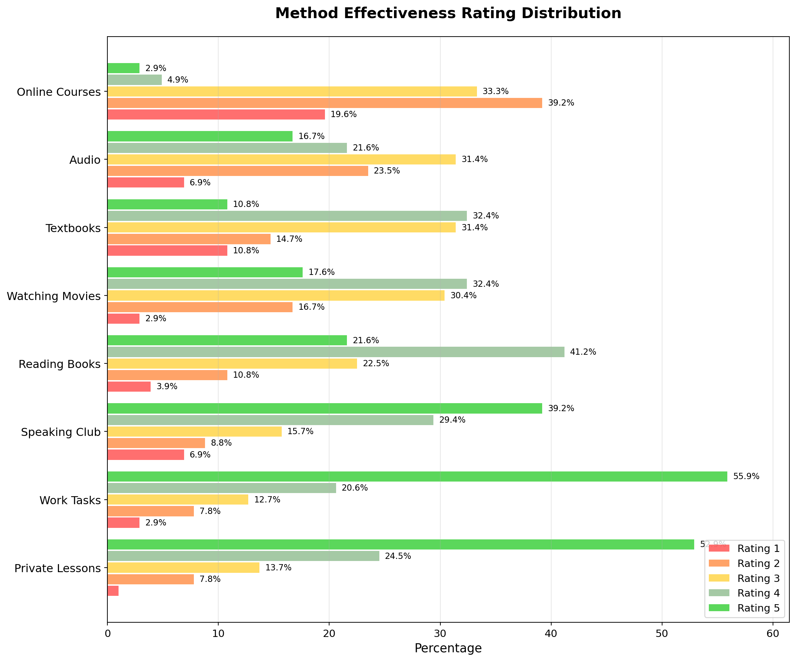
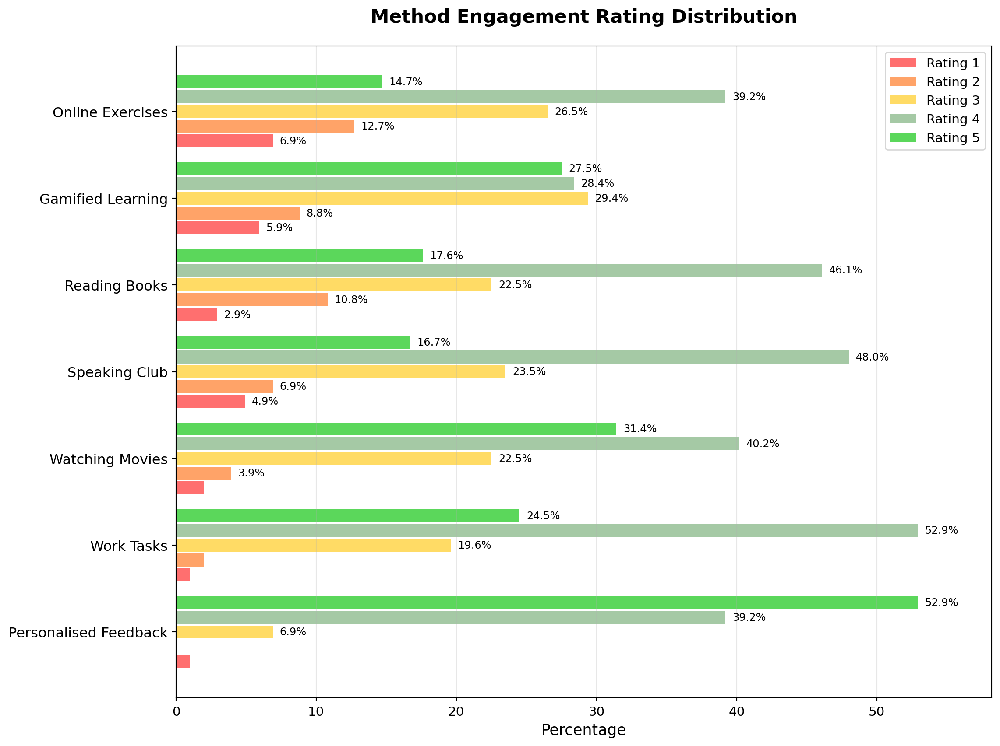
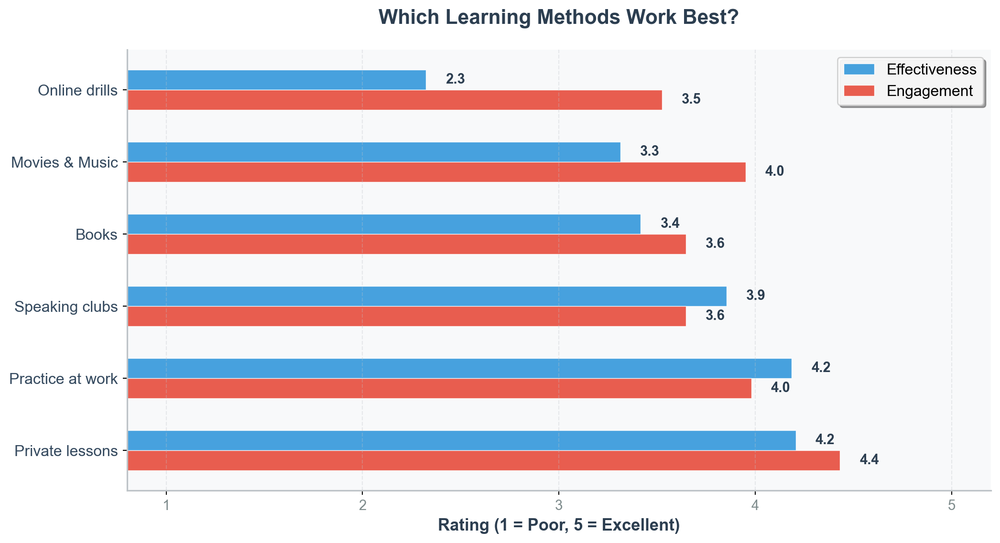

“I wish I had never chosen this method.” — Survey Respondent
Finding an effective learning strategy is often a process of trial and error. Our survey reveals that one in three respondents found at least one popular method to be “completely useless.”
This page analyses the effectiveness and engagement of various learning methods, from private lessons to speaking clubs, to help you find what might work for you.
This chart shows how respondents rated the effectiveness of each learning method. For each method, you can see how many people gave each rating (on a 1-5 scale). The methods are:
Online Courses: Structured online learning programs and platforms
Private Lessons: One-on-one tutoring with individual instructors
Textbooks: Traditional printed or digital learning materials
Watching Movies: Learning through English-language films and TV shows
Audio: Podcasts, music, and other audio content in English
Speaking Club: Group conversation practice sessions
Reading Books: Literature, articles, and other written content in English
Work Tasks: Learning English through professional activities and job requirements
Code
# Create effectiveness distribution chart# Define colours for each rating (1-5)rating_colors = {1: '#FF4B4B', 2: '#FF8C42', 3: '#FFD23F', 4: '#8FBC8F', 5: '#32CD32'}# Prepare data and calculate average for sortingmethod_data_eff = []for col in effectiveness_cols: method_name = clean_method_name(col)# Get non-null values and convert to numeric values = pd.to_numeric(df[col], errors='coerce').dropna()iflen(values) ==0:# Fill with zeros if no data percentages = {rating: 0for rating inrange(1, 6)} avg_effectiveness =0else:# Calculate percentage distribution value_counts = values.value_counts().sort_index() total =len(values)# Fill percentages for each rating (1-5) percentages = {}for rating inrange(1, 6): pct =round(value_counts.get(rating, 0) / total *100, 1) if total >0else0 percentages[rating] = pct# Calculate average effectiveness for sorting avg_effectiveness = values.mean() method_data_eff.append({'name': method_name,'percentages': percentages,'avg_effectiveness': avg_effectiveness })# Sort by average effectiveness (descending)method_data_eff.sort(key=lambda x: x['avg_effectiveness'], reverse=True)# Extract sorted datamethod_names_eff = [item['name'] for item in method_data_eff]all_percentages = {rating: [item['percentages'][rating] for item in method_data_eff] for rating inrange(1, 6)}# Create the combined horizontal bar chartfig, ax = plt.subplots(figsize=(12, 10))y_pos = np.arange(len(method_names_eff))bar_height =0.15spacing =0.02# Create bars for each ratingfor i, rating inenumerate(range(1, 6)): y_positions = y_pos + (i -2) * (bar_height + spacing) bars = ax.barh(y_positions, all_percentages[rating], bar_height, label=f'Rating {rating}', color=rating_colors[rating], alpha=0.8)# Add percentage labels on bars (only if percentage > 2% to avoid clutter)for bar, pct inzip(bars, all_percentages[rating]):if pct >2: width = bar.get_width() ax.text(width +0.5, bar.get_y() + bar.get_height()/2.,f'{pct}%', ha='left', va='center', fontsize=9)ax.set_yticks(y_pos)ax.set_yticklabels(method_names_eff, fontsize=12)ax.set_xlabel('Percentage', fontsize=13)ax.set_title('Method Effectiveness Rating Distribution', fontsize=16, fontweight='bold', pad=20)ax.legend(loc='upper right', fontsize=11)ax.grid(axis='x', alpha=0.3)ax.tick_params(axis='x', labelsize=11)ax.set_xlim(0, max([max(all_percentages[r]) for r inrange(1, 6)]) *1.1)plt.tight_layout()plt.show()

Method Engagement
This chart shows how engaging respondents found each learning method. For each method, you can see how many people gave each rating (on a 1-5 scale). The methods are:
Online Exercises: Interactive digital activities and practice tasks
Speaking Club: Group conversation and discussion sessions
Watching Movies: Engaging with English-language films and TV content
Reading Books: Enjoying literature and written materials in English
Work Tasks: Professional activities that require English skills
Gamified Learning: Game-like learning experiences with rewards and progression
Personalised Feedback: Individual assessment and customized guidance
Code
# Create engagement distribution chart# Prepare data and calculate average for sortingmethod_data_eng = []for col in engagement_cols: method_name = clean_method_name(col)# Get non-null values and convert to numeric values = pd.to_numeric(df[col], errors='coerce').dropna()iflen(values) ==0:# Fill with zeros if no data percentages = {rating: 0for rating inrange(1, 6)} avg_engagement =0else:# Calculate percentage distribution value_counts = values.value_counts().sort_index() total =len(values)# Fill percentages for each rating (1-5) percentages = {}for rating inrange(1, 6): pct =round(value_counts.get(rating, 0) / total *100, 1) if total >0else0 percentages[rating] = pct# Calculate average engagement for sorting avg_engagement = values.mean() method_data_eng.append({'name': method_name,'percentages': percentages,'avg_engagement': avg_engagement })# Sort by average engagement (descending)method_data_eng.sort(key=lambda x: x['avg_engagement'], reverse=True)# Extract sorted datamethod_names_eng = [item['name'] for item in method_data_eng]all_percentages_eng = {rating: [item['percentages'][rating] for item in method_data_eng] for rating inrange(1, 6)}# Create the combined horizontal bar chartfig, ax = plt.subplots(figsize=(12, 9))y_pos = np.arange(len(method_names_eng))bar_height =0.15spacing =0.02# Create bars for each ratingfor i, rating inenumerate(range(1, 6)): y_positions = y_pos + (i -2) * (bar_height + spacing) bars = ax.barh(y_positions, all_percentages_eng[rating], bar_height, label=f'Rating {rating}', color=rating_colors[rating], alpha=0.8)# Add percentage labels on bars (only if percentage > 2% to avoid clutter)for bar, pct inzip(bars, all_percentages_eng[rating]):if pct >2: width = bar.get_width() ax.text(width +0.5, bar.get_y() + bar.get_height()/2.,f'{pct}%', ha='left', va='center', fontsize=9)ax.set_yticks(y_pos)ax.set_yticklabels(method_names_eng, fontsize=12)ax.set_xlabel('Percentage', fontsize=13)ax.set_title('Method Engagement Rating Distribution', fontsize=16, fontweight='bold', pad=20)ax.legend(loc='upper right', fontsize=11)ax.grid(axis='x', alpha=0.3)ax.tick_params(axis='x', labelsize=11)ax.set_xlim(0, max([max(all_percentages_eng[r]) for r inrange(1, 6)]) *1.1)plt.tight_layout()plt.show()

Effectiveness vs Engagement
This chart compares the average effectiveness and engagement ratings for each method, shown side by side:
Code
# Calculate averages for methods# Group similar methods togetherall_methods = {'Speaking clubs': (['method_effectiveness:speaking_club'], ['motives:speaking_club']),'Movies & Music': (['method_effectiveness:watching_movies', 'method_effectiveness:audio'], ['motives:watching_movies']),'Books': (['method_effectiveness:reading_books', 'method_effectiveness:textbooks'], ['motives:reading_books']),'Practice at work': (['method_effectiveness:work_tasks'], ['motives:work_tasks']),'Online drills': (['method_effectiveness:online_courses'], ['motives:online_exercises', 'motives:gamified_learning']),'Private lessons': (['method_effectiveness:private_lessons'], ['motives:personalised_feedback']),}# Prepare data for combined chart and calculate averages for sortingcombined_method_data = []for method_name, (eff_cols, eng_cols) in all_methods.items():# Calculate effectiveness average - stack all values from all effectiveness columns all_eff_values = []for eff_col in eff_cols: eff_values = pd.to_numeric(df[eff_col], errors='coerce').dropna() all_eff_values.extend(eff_values.tolist()) eff_avg = np.mean(all_eff_values) if all_eff_values else np.nan# Calculate engagement average - stack all values from all engagement columns all_eng_values = []for eng_col in eng_cols: eng_values = pd.to_numeric(df[eng_col], errors='coerce').dropna() all_eng_values.extend(eng_values.tolist()) eng_avg = np.mean(all_eng_values) if all_eng_values else np.nan# Use effectiveness for sorting, fall back to engagement if effectiveness is missing sort_score = eff_avg ifnot np.isnan(eff_avg) else (eng_avg ifnot np.isnan(eng_avg) else0) combined_method_data.append({'name': method_name,'effectiveness': eff_avg,'engagement': eng_avg,'sort_score': sort_score })# Sort by effectiveness (or engagement where effectiveness is missing), descendingcombined_method_data.sort(key=lambda x: x['sort_score'], reverse=True)# Extract sorted datamethod_names = [item['name'] for item in combined_method_data]effectiveness_scores = [item['effectiveness'] for item in combined_method_data]engagement_scores = [item['engagement'] for item in combined_method_data]# Create horizontal bar charty = np.arange(len(method_names))height =0.28# Set clean fontplt.rcParams['font.family'] ='sans-serif'plt.rcParams['font.sans-serif'] = ['Arial', 'Helvetica', 'DejaVu Sans']fig, ax = plt.subplots(figsize=(11, 6))# Create horizontal bars with clear coloursbars1 = ax.barh(y + height/2, effectiveness_scores, height, label='Effectiveness', color='#3498db', alpha=0.9, edgecolor='white', linewidth=0.5)bars2 = ax.barh(y - height/2, engagement_scores, height, label='Engagement', color='#e74c3c', alpha=0.9, edgecolor='white', linewidth=0.5)# Add value labels on barsfor i, (bar1, bar2) inenumerate(zip(bars1, bars2)):ifnot np.isnan(effectiveness_scores[i]): width1 = bar1.get_width() ax.text(width1 +0.1, bar1.get_y() + bar1.get_height()/2.,f'{effectiveness_scores[i]:.1f}', ha='left', va='center', fontsize=11, fontweight='bold', color='#2c3e50')ifnot np.isnan(engagement_scores[i]): width2 = bar2.get_width() ax.text(width2 +0.1, bar2.get_y() + bar2.get_height()/2.,f'{engagement_scores[i]:.1f}', ha='left', va='center', fontsize=11, fontweight='bold', color='#2c3e50')# Clear stylingax.set_xlabel('Rating (1 = Poor, 5 = Excellent)', fontsize=13, fontweight='600', color='#2c3e50')ax.set_title('Which Learning Methods Work Best?', fontweight='bold', fontsize=16, color='#2c3e50', pad=20)ax.set_yticks(y)ax.set_yticklabels(method_names, fontsize=12, fontweight='500', color='#34495e')# Clean stylingax.set_xticks([1, 2, 3, 4, 5])ax.set_xticklabels(['1', '2', '3', '4', '5'], fontsize=11, color='#7f8c8d')ax.legend(fontsize=12, loc='upper right', frameon=True, fancybox=True, shadow=True, framealpha=0.9, facecolor='white')ax.grid(axis='x', alpha=0.3, linestyle='--', linewidth=0.8, color='#bdc3c7')ax.set_xlim(0.8, 5.2)# Clean bordersax.spines['top'].set_visible(False)ax.spines['right'].set_visible(False)ax.spines['bottom'].set_color('#bdc3c7')ax.spines['left'].set_color('#bdc3c7')ax.spines['bottom'].set_linewidth(1.2)ax.spines['left'].set_linewidth(1.2)# Add subtle background colourax.set_facecolor('#f8f9fa')plt.tight_layout()plt.show()# Reset font settings to default after the chartplt.rcParams.update(plt.rcParamsDefault)

Interactive: Other Learning Methods
The table below shows other learning methods that respondents mentioned in their answers. Use the language toggle to switch between original and English translations.
Text language:
Additional Learning Methods
Зараз намагаюсь хоча б потрошки рухатись далі у вивченні англійської користуючись картками зі словами, та повторенням вивчених слів які з часом запам’ятовуються доволі непогано. Також з часом переглядаючи фільми англійською або ж просто з субтитрами ці нові вивчені слова частіше помічаєш. В подальшому планую займатись персонально з викладачем так як думаю що це найкращий спосіб підтягнути англійську але також важливо визначити конкретну потребу та який аспект варто покращити.Now I'm trying to at least move forward a little in learning English using word cards, and repeating learned words that are remembered quite well over time. Also, over time, watching movies in English or just with subtitles, you notice these new learned words more often. In the future, I plan to study individually with a teacher, as I think this is the best way to improve my English, but it is also important to determine the specific need and which aspect should be improved.
Спроби говорити або намагится сприймати інформацію, фільми, книги, ігри англійською без попередніх знань мови.Attempts to speak or try to perceive information, movies, books, and games in English without prior knowledge of the language.
спеціально підготовлені матеріали для drills, translating on the fly, q&a, над яким працюєш приблизно тиждень і працюєш вголос. drills - спікер читає текст англійською і робить паузи після кожного речення і тобі потрібно повторити речення translating on the fly - спікер читає речення українською і робить паузу, щоб ти переклав то це речення і після цього він читає це речення англійською і ти порівнюєш зі своїм варіантом q&a - спікер читає речення англійською і потім ставить англійською питання до цього речення, ти маєш дати відповідь на питання базуючись на реченні, що було прочитано, потім спікер читає правильну відповідь і ти порівнюєш зі своїм варіантомspecially prepared materials for drills, translating on the fly, q&a, which you work on for about a week and work out loud. drills - the speaker reads the text in English and pauses after each sentence and you need to repeat the sentence translating on the fly - the speaker reads a sentence in Ukrainian and pauses for you to translate that sentence and then he reads that sentence in English and you compare with your version q&a - the speaker reads a sentence in English and then asks a question in English to that sentence, you have to answer the question based on the sentence that was read, then the speaker reads the correct answer and you compare with your version
Інтенсивні онлайн курси на закріплення окремої навичкиIntensive online courses to consolidate a specific skill
YoutubeYoutube
Quest, speaking with AIQuest, speaking with AI
-—
Пробую різні методики щоб було цікавіше: і пісні і фільми і різні вправиI try different methods to make it more interesting: songs, movies, and various exercises
Читання статей та книг в комбінації з подальшим регулярним вивченням незнайомих слівReading articles and books in combination with further regular learning of unfamiliar words
Занурення в мовне середовище 😅 Або використання інтерактивних вправ де поєднється використання декількох навичок водночас (напр. читання + письмо + аудіювання)Immersion in the language environment 😅 Or the use of interactive exercises that combine the use of several skills at the same time (e.g. reading + writing + listening)
за допомогою англійської вивчати інші мови (наприклад, в Дуо для вивчення французької як нейтів обрати англійську)using English to learn other languages (for example, in Duolingo, choose English as your native language to learn French)
Коли неочікувано потрапляєш на вечірку, де всі говорять англійською, думаєш х100 швидше (навіть якщо трішки пʼяненький)👀When you unexpectedly get to a party where everyone speaks English, you think x100 faster (even if you're a little tipsy)👀
Індивідуальні регулярні зустрічі з нейтівамиIndividual regular meetings with native speakers
Ні, використовую загально відоме. Але хочу спробувати додаток з АІNo, I use the well-known ones. But I want to try an AI app
Їхати у мовне середовищеGoing to a language environment
Дуже ефективно: -Вчити когось, створювати навчальний контент. Поки складаєш матеріали і пояснюєш, сам згадуєш і практикуєш -Погрузити себе в англомовне середовище, де просто немає іншого варіанту як використовувати англійську -Ведення щоденника, блогу англійською, писати нотатки -Хоббі англійською -Зустрічі з друзями англійською -Ігри на кожен день. Люблю ДаНі грати або Корова) -Вчити іншу мову, де вчитель англійською пояснює. Я пробувала в італійську так зайти. Було цікаво:) Вчиш нове слово італійською, а питаєш англійською про правила використання, наприклад. Спадає напруга щось говорити англійською, згадуєш слова, думаєш англійською як рідною. Неефективно -10 застосунків одразу, складно системно так вивчати - Групи класичні. Мені завжди час шкода - Загальна ІТ англійська. Як дизайнеру мені не заходить вчити про токени з програмістами. В житті мало цього спілкування, в інтереси не попадає.. І вчитись стає нудно тому. А от small talk чи кризові комунікації- корисні теми.. Тут вибірково -Вчити слова без контексту -Робити 2 вправи на правило по новій граматиці. Начебто і зробив, а через тиждень забув. Добре якщо тренажери і до автоматизму, чи повторювати через інтервалиVery effective: -Teaching someone, creating educational content. While you are compiling materials and explaining, you remember and practice yourself -Immerse yourself in an English-speaking environment where there is simply no other option but to use English -Keeping a diary, blog in English, writing notes -Hobbies in English -Meetings with friends in English -Games for every day. I love playing DaNi or Cow) -Learning another language, where the teacher explains in English. I tried to get into Italian like that. It was interesting:) You learn a new word in Italian, and you ask in English about the rules of use, for example. It relieves the tension of saying something in English, you remember words, you think in English like a native. Ineffective -10 applications at once, it is difficult to study systematically like that - Classic groups. I always feel sorry for the time - General IT English. As a designer, I don't like learning about tokens with programmers. There is little of this communication in life, it does not fall into my interests. And it becomes boring to learn because of this. But small talk or crisis communications are useful topics. Here selectively -Learning words without context -Doing 2 exercises on a rule for new grammar. It seems like you did it, but you forgot it a week later. It's good if there are simulators and to automatism, or repeat through intervals
Повинна бути постійна практика використання вивченого матеріалу, інакше все швидко забувається, і те що використовується постійно в роботі, те краще закріплюється.There should be constant practice of using the learned material, otherwise everything is quickly forgotten, and what is used constantly in work is better consolidated.
короткі відео з опитуванням слів різного рівня мені здалися доволі ефективнимиshort videos with a survey of words of different levels seemed quite effective to me
-—
В моєму випадку працює лише практика реального спілкування.In my case, only real communication practice works.
ПодкастиPodcasts
Preparations to English exams like IELTS/CELPIPPreparations to English exams like IELTS/CELPIP
Ефективні - мовне середовище Неефективні - концентрація лише на одному з навичок (читання, слухання, граматика)Effective - language environment Ineffective - concentration on only one of the skills (reading, listening, grammar)
Переїхати в англомовне оточення, практикувати кожен день. Все інше для галочки і ти можеш в більшості тільки підтримувати свій рівень. При заняттях регулярних з викладачем - можна покращувати потроху рівень і. відточувати граматікуMove to an English-speaking environment, practice every day. Everything else is for show and you can mostly only maintain your level. With regular classes with a teacher, you can gradually improve your level and hone your grammar
Читання художньої літератури найбільш ефективний спосіб для мене збільшити словник, так відрефлексувати стилістику мовлення, ідіоми, граматику, тощо.Reading fiction is the most effective way for me to increase my vocabulary, to reflect on the style of speech, idioms, grammar, etc.
twitter ефективний етимологічний словник ефективнийtwitter is effective etymological dictionary is effective
ENG programENG program
повсякденне спілкуванняeveryday communication
Схоже, на вже згадане, але вирішив уточнити - перегляд відео/фільмів с субтитрами (англ. звук та англ. субтитри). І читаєш і слухаєш одночасно) Крім того вважаю непоганим встановлювати собі англійську мову як основну, де можливо (наприклад на телефоні). Це не дозволить вивчати "нове" але додає відчуття англомовного оточення)Similar to what has already been mentioned, but I decided to clarify - watching videos/movies with subtitles (English audio and English subtitles). You read and listen at the same time) In addition, I think it's a good idea to set English as the main language wherever possible (for example, on your phone). This will not allow you to learn "new" things, but it adds a sense of an English-speaking environment)
Використання нейронних мереж (ChatGPT, Gemini) та інструментів (Grammarly) для перевірки та покращення граматики та структури письмаUsing neural networks (ChatGPT, Gemini) and tools (Grammarly) to check and improve grammar and writing structure
Школа англійської з суворою авторською методикою. +рівень за 4 місяці Неефективні - будь-які додатки, корпоративні заняттяEnglish school with a strict author's methodology. +level in 4 months Ineffective - any applications, corporate classes
Англомовне середовище, спілкування з носіями - виявилось найефективнішим серед багаторічного навчання з українськими викладачамиEnglish-speaking environment, communication with native speakers - turned out to be the most effective among many years of studying with Ukrainian teachers
Перекласти текст улюбленої пісні та потім підспівувати з розуміннямTranslate the text of your favorite song and then sing along with understanding
Вивчення анекдотів та дослівний переказ коротких смішних історії, багато вправ на аудіовання.Learning jokes and verbatim retelling of short funny stories, a lot of listening exercises.
ніno
QuizletQuizlet
Проговорювати діалоги у себе в головіSpeaking dialogues in your head